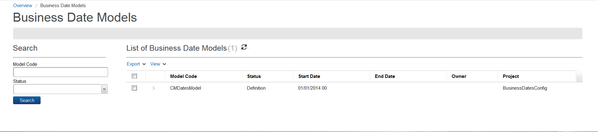
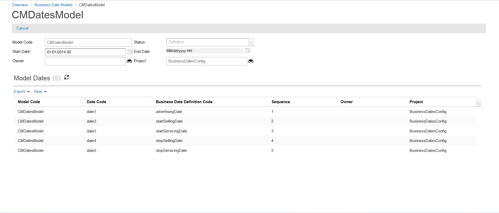

Business Date Model
The business date model is a concept that represents a set of dates. A new data type of that is of type enumeration, dateSubType[endDate, startDate], can be used in the future.
You can access business date models by clicking Technical Configuration > Business Date Model from the Quick Start menu.

The Business Date Models page contains the following fields:
| Field |
Description |
| Model Code |
This field denotes the code for the business date model. |
| Status |
This field denotes a list of available statuses for the business date model (for example, Definition and Active). |
| Start Date |
This field represents the start (effective) date that the business date model is available. Refer to Start and End dates for details. |
| End Date |
This field indicates the date when the business date model is no longer effective. Refer to Start and End dates for details. |
| Owner |
This field represents the position of the user who created the project. Only users with the same position or higher can access the project data. This value cannot be changed. Refer to Domains for more information. |
| Project |
This field indicates with which project the business date model is associated. Each object is assigned to a project. This field defaults to the active or opened project when the business date model is first created. |
Double-clicking any business date model from the list allows you to view its details:

The Business Date Models details page contains the following fields:
| Field |
Description |
| Model Code |
This field denotes the code for the business date model. |
| Date Code |
This field denotes the date code associated with the business date model. |
| Business Date Definition Code |
This field represents the code linked to the business date definition code. |
| Sequence |
This field contains the business date definition code's sequence position in the model. |
| Owner |
This field represents the position of the user who created the project. Only users with the same position or higher can access the project data. This value cannot be changed. Refer to Domains for more information. |
| Project |
This field indicates with which project the business date definition is associated. Each object is assigned to a project. This field defaults to the active or opened project when the business date model is first created. |
The Catalog business date model is defined as follows:
- Business Date Model
- Model Code
- Start Date
- End Date
- Business Date Model Dates
- Model Code
- Date Model Definition Code
- Start Date
- End Date
- Business Date Definition
- Dates Model Definition Code
- Name
- Label
- Date Type (code table with Start Date and End Date as date subtypes)
- Sequence
- Date Value Leaf Name
- Related Date Code
- Status
- Start Date
- End Date
Notes:
- The item table contains an additional column to store the model code.
- Whenever an item extends a base item, the model code from the base defaults to the child item. If you want to change the model, you can change it on the item.
- It is recommended that this code be defined on base items only and not be changed on extended items.
- Both runtime and the maintenance user interface uses the datesModelCode to determine what dates are applicable to the item.
Handle Dates on Different Models
The Browse Catalog API returns offers only available for advertising or offers available for selling, or both. See Browse Catalog API for details.
The following table shows what dates are used to return results of browse and addItem.
| STARTDATE_ADVERTISING |
STARTDATE_SELLING |
ENDDATE_SELLING |
STARTDATE_SERVICING |
ENDDATE_SERVICING |
RUNQuery_Advertising |
RunQuery_Selling |
ADD Item |
Used
|
Used |
Used |
Used |
Used |
startDateAdvertising < catalogAPITime < endDateSelling |
startDateSelling < catalogAPITime < endDateSelling |
startDateSelling < catalogAPITime < enddateServicing |
Not used |
Used |
Used |
Used |
Used |
startDate < catalogAPITime < endDateSelling |
startDateSelling < catalogAPITime < endDateSelling |
startDateSelling < catalogAPITime < enddateServicing |
Not used |
Not used |
Not used |
Used |
Used |
startDate < catalogAPITime < endDateServicing |
startDate < catalogAPITime < endDateServicing |
startDate < catalogAPITime < endDateServicing |
Not used |
Not used |
Not used |
Not used |
Used |
startDate < catalogAPITime< endDateServicing |
startDate < catalogAPITime< endDateServicing |
startDate< catalogAPITime< endDateServicing |
|